Objetivo
Este reporte documenta la Actividad 18, «La investigación forense: la huella digital de un cibercriminal». El objetivo es familiarizarse con la herramienta Autopsy para analizar una imagen forense, aplicar una metodología estructurada de investigación, cuidar la integridad de la evidencia y relacionar los hallazgos con el caso. Cada paso se documenta con su captura de pantalla, el resultado obtenido y la razón técnica por la que se realiza.
Hechos del caso. El 20 de septiembre de 2004 se encontró abandonada una computadora portátil Dell CPi (número de serie VLQLW) junto con una tarjeta PCMCIA inalámbrica y una antena externa 802.11b casera. Se sospecha que se usó con fines de piratería, pero no existe un vínculo directo con un sospechoso: Greg Schardt, conocido en línea como «Mr. Evil». Según sus asociados, estacionaba su vehículo al alcance de puntos de acceso inalámbricos (cafeterías y otros hotspots) para interceptar tráfico de Internet y obtener números de tarjetas de crédito, nombres de usuario y contraseñas (fraude conocido como carding). La imagen forense del disco proviene del caso «Hacking Case» de NIST (CFReDS), que se usa para entrenamiento forense.
De las 31 preguntas del escenario se responden las que indica la actividad. La tabla 1 muestra cada pregunta y dónde se resolvió en Autopsy.
| Pregunta | Dónde se responde |
|---|---|
| Tipos de origen «Logical Files» y «Local Disk» | Asistente Add Data Source (conocimiento de la herramienta) |
| Hash de la imagen y coincidencia | Resumen del contenedor (Summary → Container) |
| Sistema operativo | Data Artifacts → Operating System Information |
| Fecha de instalación | Hive SOFTWARE, llave CurrentVersion (InstallDate) |
| Zona horaria | Hive SYSTEM, llave TimeZoneInformation |
| Propietario registrado | Operating System Information y llave CurrentVersion |
| Nombre de la cuenta de la computadora | Hive SYSTEM, llaves ComputerName y Tcpip |
| Nombre de dominio principal | Hive SYSTEM, llaves Tcpip\Parameters y lanmanworkstation |
| Último apagado del equipo | Hive SYSTEM, llave Control\Windows (ShutdownTime) |
| Número total de cuentas | Hive SAM (Users\Names) y vista OS Accounts |
Desarrollo
Obtención de la evidencia
Se descargó la evidencia del enlace indicado en la actividad (https://cfreds-archive.nist.gov/Hacking_Case.html). Está compuesta por 8 partes (SCHARDT.001 a SCHARDT.008) de una sola imagen en formato RAW dividida en segmentos, que se guardaron en una misma carpeta: Escritorio\Act18\Evidencias. Para el proyecto se creó, en la misma carpeta Act18, la carpeta Caso, que se usará como directorio base y que está vacía al inicio (figura 1).
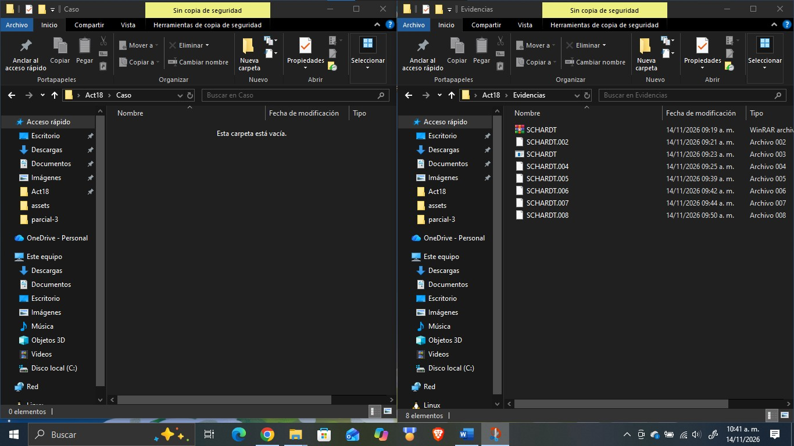
Windows oculta la extensión de los tipos de archivo que reconoce, por eso las partes .001 y .003 aparecen solo como «SCHARDT»; la ruta que muestra Autopsy más adelante (figura 8) confirma que el primer fragmento es SCHARDT.001. Se mantienen todos los fragmentos juntos porque Autopsy los une automáticamente al abrir la primera parte.
Configuración del caso en Autopsy
Se ejecutó Autopsy 4.23.1 y en la ventana de bienvenida se eligió «New Case» (figura 2).
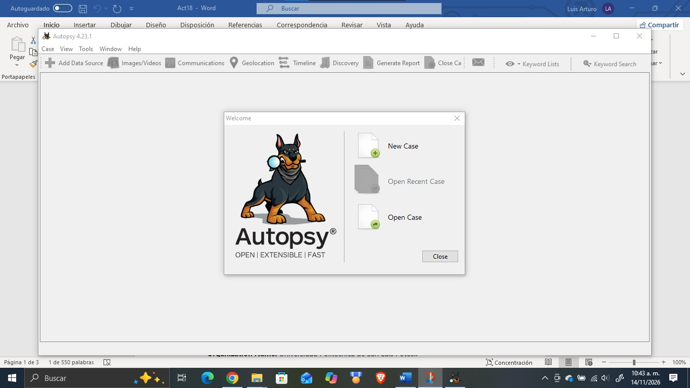
En la primera pestaña (Case Information) se capturó el nombre del caso INV01UPSLP y como directorio base la carpeta Caso creada en el escritorio. El tipo de caso es Single-User, porque el análisis lo hace una sola persona en un solo equipo. Autopsy muestra la ruta final en la que guardará todos los datos del caso (figura 3).
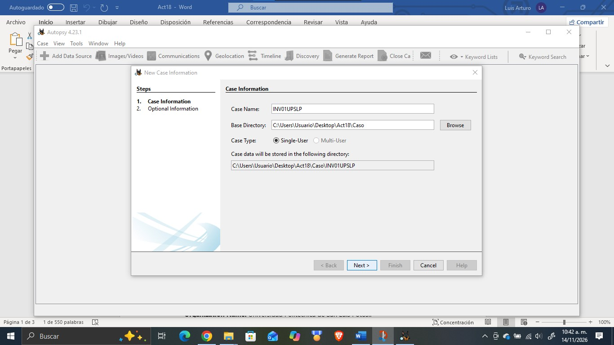
En la segunda pestaña (Optional Information) se registró el número de caso 01, los datos del examinador (nombre, correo institucional y teléfono vacío) y las notas «Fraude (carding) Greg Schardt» (figura 4). Estos datos quedan almacenados en el caso y aparecen en los reportes, lo que ayuda a la trazabilidad: indican quién realizó el análisis y sobre qué asunto.
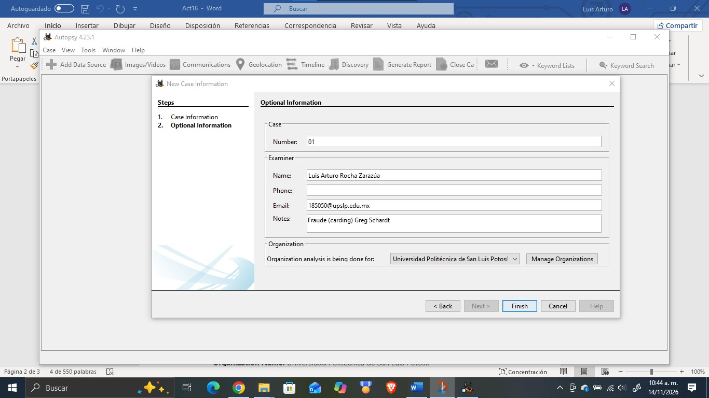
Con «Manage Organizations» se creó una nueva organización y se seleccionó para el caso (figura 5). Sus datos se resumen en la tabla 2 junto con los demás datos de configuración.
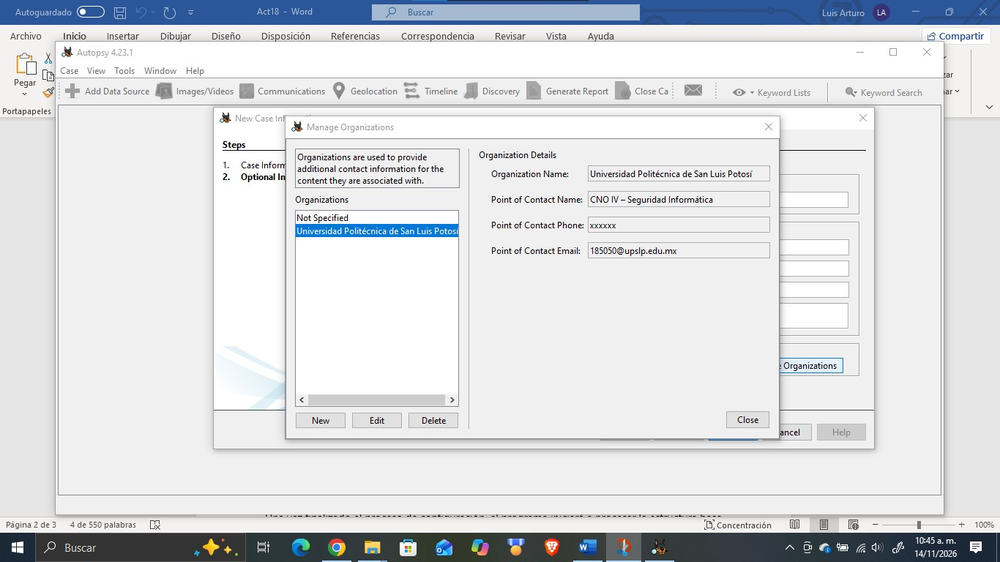
| Campo | Valor |
|---|---|
| Case Name | INV01UPSLP |
| Base Directory | C:\Users\Usuario\Desktop\Act18\Caso |
| Case Type | Single-User |
| Number | 01 |
| Examiner (nombre / correo) | Luis Arturo Rocha Zarazúa / 185050@upslp.edu.mx |
| Notes | Fraude (carding) Greg Schardt |
| Organization Name | Universidad Politécnica de San Luis Potosí |
| Contacto de la organización | CNO IV – Seguridad Informática (teléfono xxxxxx) |
Importación de la imagen forense
Al terminar la configuración, Autopsy creó la estructura del caso y abrió el asistente Add Data Source. En el primer paso se dejó la opción «Generate new host name based on data source name», con la que Autopsy crea un host nuevo a partir del nombre de la fuente de datos (figura 6). Un host sirve para organizar las fuentes de datos que pertenecen a un mismo equipo.
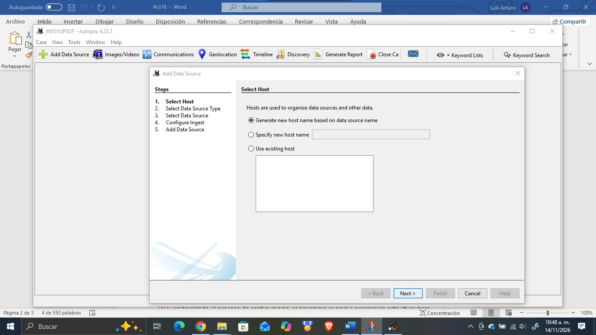
En el segundo paso se seleccionó «Disk Image or VM File», porque la evidencia es una imagen de disco en formato RAW (figura 7).
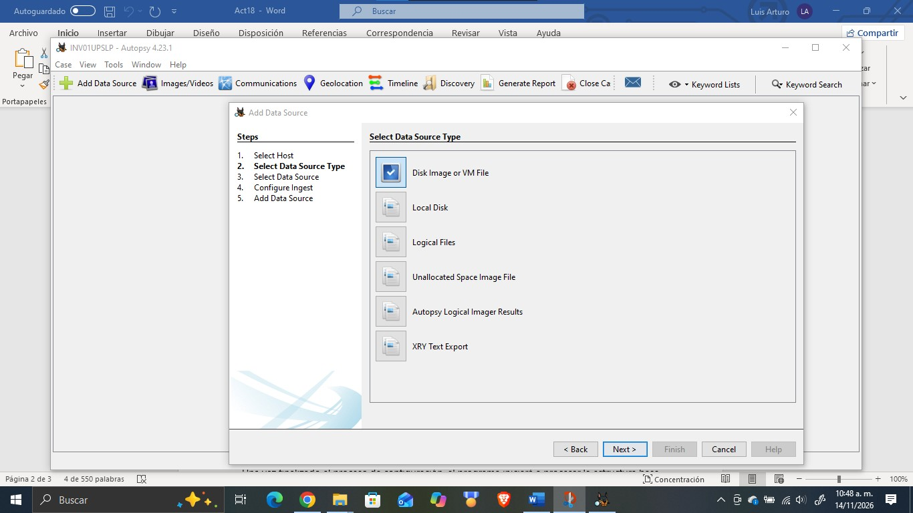
En el tercer paso se indicó la ubicación de los archivos: el primer fragmento, SCHARDT.001, de la carpeta Evidencias. La zona horaria de la importación es America/Mexico_City (GMT-6:00) y el tamaño de sector se dejó en detección automática; los campos de hash se dejaron vacíos porque son opcionales y no se validan al agregar la fuente (figura 8).
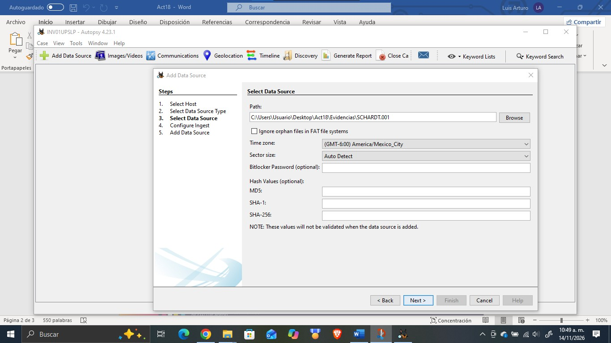
En el cuarto paso (Configure Ingest) se ejecutaron los módulos sobre «All Files, Directories, and Unallocated Space» y se marcaron todos los módulos disponibles con «Select All», entre ellos Recent Activity, Hash Lookup, File Type Identification, Extension Mismatch Detector, Embedded File Extractor, Picture Analyzer, Keyword Search, Email Parser, Encryption Detection, Interesting Files Identifier, Central Repository, PhotoRec Carver y Virtual Machine Extractor (figura 9). Activar todos los módulos permite que Autopsy extraiga automáticamente artefactos del sistema, del navegador y del correo, además de buscar archivos eliminados en el espacio no asignado.
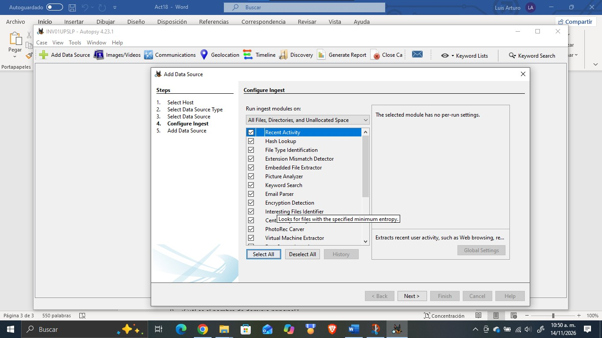
Por último, el asistente informó que la fuente de datos se agregó a la base de datos local y que los archivos se estaban analizando; se pulsó Finish y la importación continuó en segundo plano (figura 10). En el panel izquierdo ya aparecen los árboles de Data Sources, File Views y Data Artifacts.
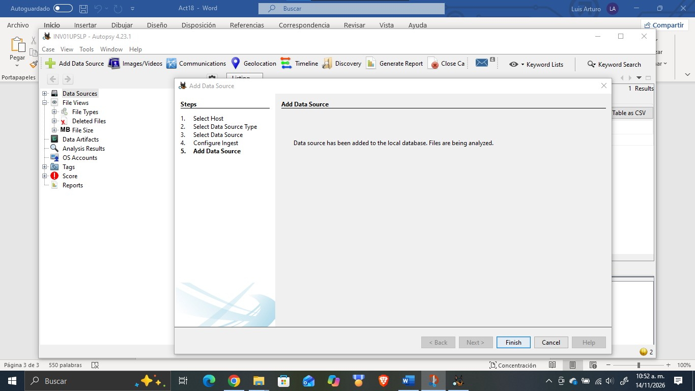
Tipos de origen de datos
Pregunta: ¿a qué se refiere el tipo de origen «Logical Files»? Se refiere a archivos o carpetas individuales que se agregan al caso tal como existen en el sistema de archivos de un equipo o de un medio: por ejemplo, una carpeta de documentos, una carpeta copiada de un equipo o archivos recolectados por otra herramienta. Autopsy los trata como un conjunto lógico de archivos, así que solo se analizan su contenido y sus metadatos visibles. No hay estructura del disco, ni espacio no asignado, ni archivos eliminados que recuperar.
Pregunta: ¿a qué se refiere el tipo de origen «Local Disk»? Se refiere a un disco o volumen físico conectado al equipo del analista (una unidad interna o externa, una memoria USB) que se lee directamente, sector por sector. Como se analiza el medio completo, se pueden revisar particiones, archivos eliminados, espacio no asignado y espacio sobrante (slack). Para no alterar la evidencia, el disco debe conectarse mediante un bloqueador de escritura (write blocker). Para este caso se eligió «Disk Image or VM File» y no «Local Disk», porque la evidencia ya es una copia forense en archivo y no se debe trabajar sobre el disco original. La tabla 3 compara los tres tipos.
| Aspecto | Disk Image or VM File | Local Disk | Logical Files |
|---|---|---|---|
| Qué es | Imagen de disco en archivo (RAW, E01, VMDK…) | Disco o volumen conectado al equipo | Archivos o carpetas individuales |
| Archivos eliminados | Sí | Sí | No |
| Espacio no asignado | Sí | Sí | No |
| Modifica la evidencia | No (se trabaja sobre la copia) | Riesgo si no hay write blocker | No |
| Uso en esta actividad | Sí (SCHARDT.001–.008) | No | No |
Hash de la imagen
Una vez agregada la fuente, en la pestaña Summary → Container se revisaron los datos de la imagen. Autopsy la identifica como «Raw Single» (las 8 partes se leen como una sola imagen) de 4.87 GB (4,871,301,120 bytes), con 3.08 GB de espacio no asignado y sectores de 512 bytes. Al inicio, los campos MD5, SHA1 y SHA256 estaban vacíos, igual que «Acquisition Details»: una imagen RAW no guarda metadatos de adquisición ni hashes dentro del archivo (figura 11).
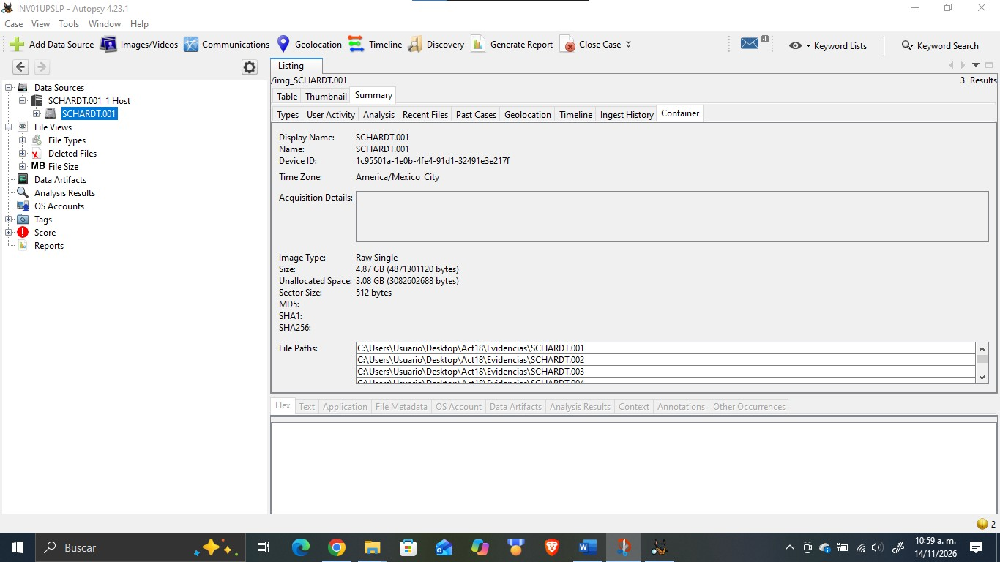
El módulo de ingest «Data Source Integrity» calcula los hashes de la imagen completa y, por el tamaño del archivo, tarda varios minutos. En la barra inferior se ve su avance (31 %, figura 12) y, al terminar, los tres hashes aparecen en el resumen (figura 13).
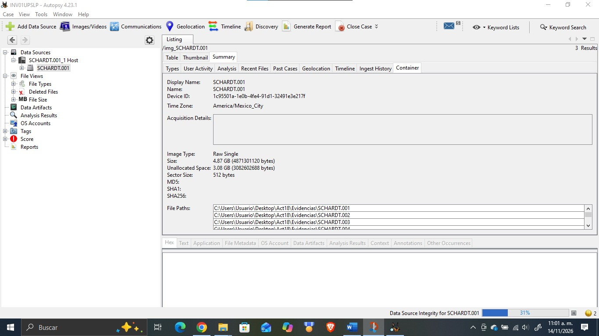
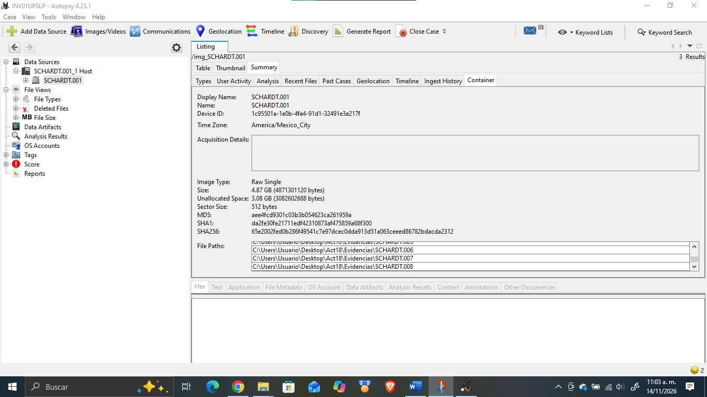
| Algoritmo | Hash calculado por Autopsy (verificación) | Hash de adquisición |
|---|---|---|
| MD5 | aee4fcd9301c03b3b054623ca261959a | Coincide |
| SHA-1 | da2fe30fe21711edf42310873af475859a68f300 | Línea base |
| SHA-256 | 65e2002fed0b286f49541c7e97dcec0dda913d51a063ceeed86782bdacda2312 | Línea base |
Por qué es importante. El hash es una huella digital del contenido: si cambia un solo bit de la imagen, el resultado es totalmente distinto. Comparar el hash de adquisición con el de verificación demuestra que la evidencia se mantiene íntegra, requisito de la cadena de custodia para que los hallazgos tengan valor probatorio. Como MD5 es débil frente a colisiones, se recomienda apoyarse además en SHA-256.
Sistema operativo
Para identificar el sistema operativo se usó el árbol Data Artifacts → Operating System Information, que Autopsy llena con el módulo Recent Activity (figura 14).
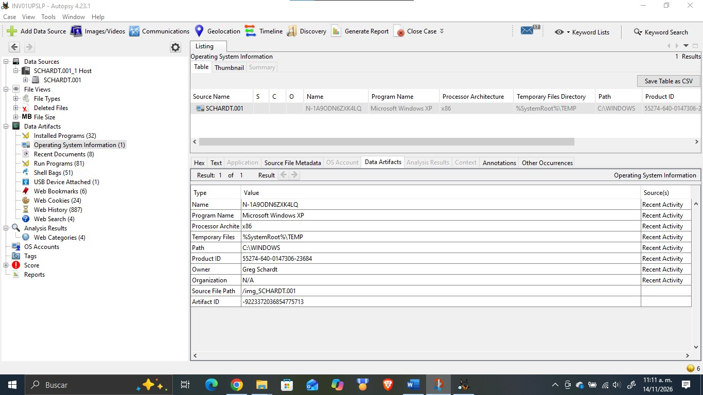
Resultado. Autopsy reporta Program Name «Microsoft Windows XP», arquitectura x86 (32 bits), ruta de instalación C:\WINDOWS, directorio temporal %SystemRoot%\TEMP y Product ID 55274-640-0147306-23684. Los datos coinciden con la llave CurrentVersion del hive SOFTWARE (figura 15): ProductName «Microsoft Windows XP», CurrentVersion 5.1 y CurrentBuildNumber 2600, que corresponden a la familia Windows XP.
Fecha de instalación
La fecha de instalación se obtuvo del Registro. Con el visor de Autopsy (pestaña Application) se abrió el archivo software, ubicado en /Windows/system32/config, y se navegó a SOFTWARE\Microsoft\Windows NT\CurrentVersion (figura 15).
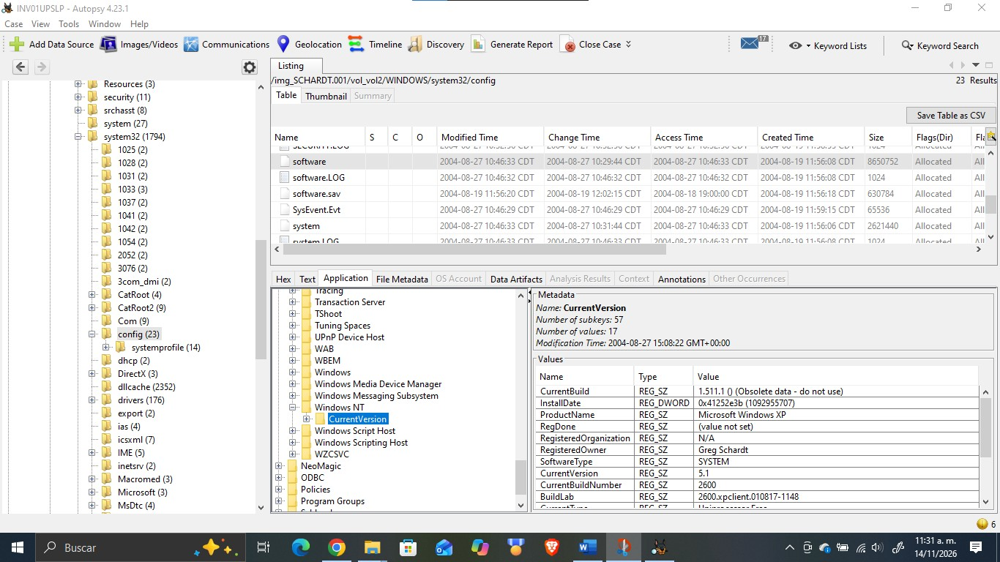
Resultado. El valor InstallDate es un REG_DWORD con 0x41252e3b, es decir, 1,092,955,707 segundos desde el 1 de enero de 1970 (tiempo Unix). Se convirtió con Python para comprobarlo:
python3 -c "import datetime as d; print(d.datetime(1970,1,1)+d.timedelta(seconds=0x41252e3b))"
2004-08-19 22:48:27Observación. Los archivos de la carpeta config tienen fecha de creación del 19/08/2004 a las 11:56 CDT, anterior a la hora de InstallDate. Es esperable porque la instalación de Windows XP tiene varias fases (copia de archivos y modo gráfico), InstallDate se escribe al final y el reloj puede ajustarse durante el proceso. Por eso se reporta el valor InstallDate del Registro como fecha oficial de instalación.
Zona horaria
La zona horaria está en el hive SYSTEM, llave Control\TimeZoneInformation (figura 16).
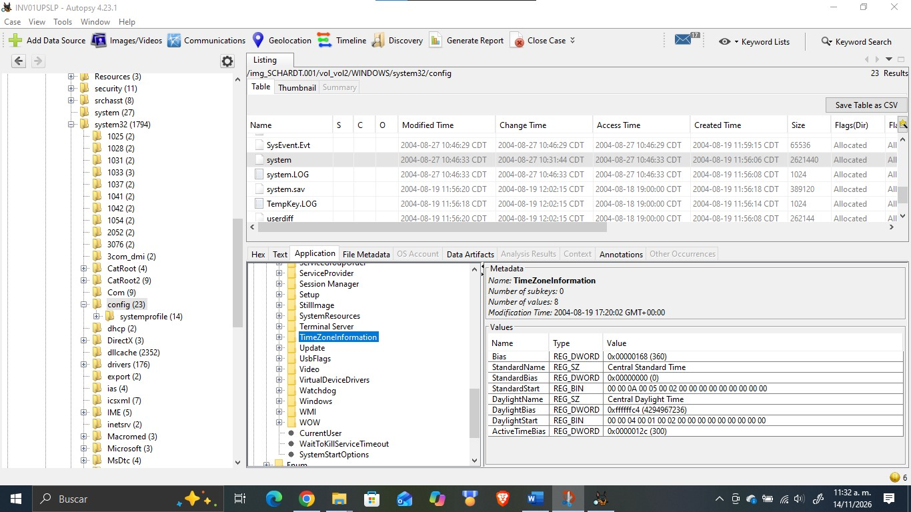
| Valor | Dato | Significado |
|---|---|---|
StandardName | Central Standard Time | Hora estándar central |
Bias | 0x168 (360) | UTC = hora local + 360 min, es decir, UTC-6 |
DaylightName | Central Daylight Time | Hora de verano central |
DaylightBias | 0xffffffc4 (-60) | En verano se adelanta 1 hora: UTC-5 |
StandardStart | 00 00 0A 00 05 00 02 00… | Cambio a hora estándar: último domingo de octubre, 02:00 |
DaylightStart | 00 00 04 00 01 00 02 00… | Cambio a hora de verano: primer domingo de abril, 02:00 |
ActiveTimeBias | 0x12c (300) | Desfase activo: 300 min, es decir, UTC-5 (horario de verano) |
Importancia. Todas las marcas de tiempo del Registro se guardan en UTC y la zona horaria permite convertirlas a la hora local del equipo. En agosto de 2004, la zona America/Mexico_City que se eligió en la importación (figura 8) también estaba en UTC-5, por lo que las fechas que Autopsy muestra en CDT coinciden con las del equipo analizado. Las llaves del visor de Registro se muestran en GMT+00:00 y las del sistema de archivos en CDT, así que se convierten a una sola zona antes de compararlas.
Propietario registrado
El propietario aparece en dos lugares: en Operating System Information, campo Owner (figura 14), y en la llave CurrentVersion, valor RegisteredOwner (figura 15). Ambos coinciden, y RegisteredOrganization es «N/A».
Importancia. Es el primer vínculo entre la computadora y el sospechoso. Este valor es el nombre que se escribió al instalar Windows, así que prueba a nombre de quién se registró el sistema, pero no demuestra por sí solo quién lo usó; debe corroborarse con otras evidencias.
Nombre de la cuenta de la computadora
El nombre de la computadora está en el hive SYSTEM, llave Control\ComputerName\ComputerName (figura 17), y coincide con el campo Name de Operating System Information (figura 14).
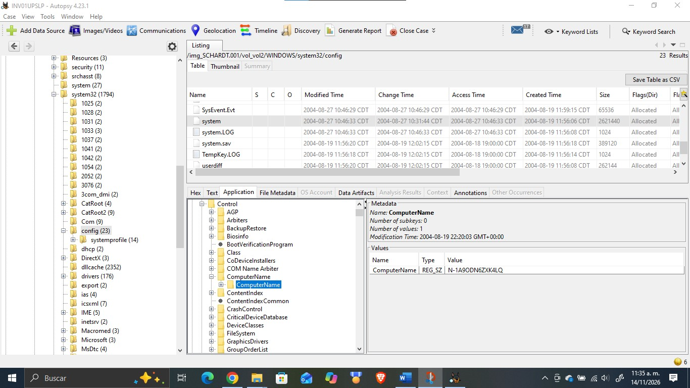
Nombre de dominio principal
Para el dominio se revisó la configuración TCP/IP, en SYSTEM\Services\Tcpip\Parameters (figura 18), y la de la estación de trabajo, en Services\lanmanworkstation\parameters (figura 19).
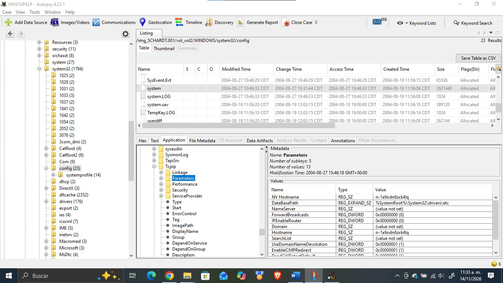
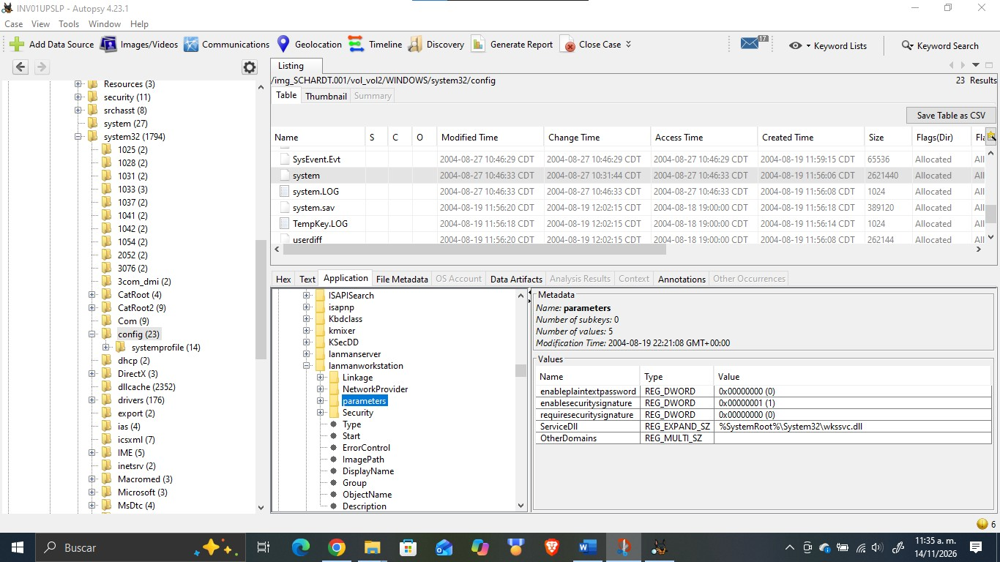
Resultado. En Tcpip\Parameters el valor Domain aparece como «(value not set)» y el Hostname es n-1a9odn6zxk4lq; en lanmanworkstation el valor OtherDomains está vacío. No hay un dominio DNS configurado ni dominios adicionales.
Último apagado del equipo
La fecha del último apagado se guarda en SYSTEM\...\Control\Windows, valor ShutdownTime (figura 20).
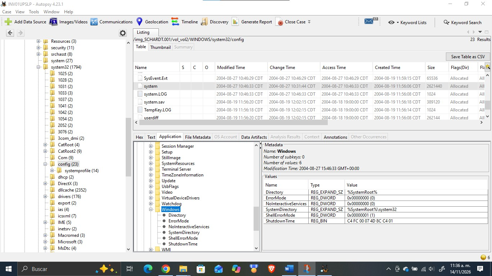
Resultado. ShutdownTime es un valor REG_BIN de 8 bytes que contiene una estructura FILETIME de Windows: el número de intervalos de 100 nanosegundos transcurridos desde el 1 de enero de 1601, guardado en orden little-endian. Los bytes C4 FC 00 07 4D 8C C4 01 se leen como 0x01C48C4D0700FCC4. Se decodificó con Python:
python3 -c "import datetime as d; v=int.from_bytes(bytes.fromhex('C4FC00074D8CC401'),'little'); print(d.datetime(1601,1,1)+d.timedelta(microseconds=v//10))"
2004-08-27 15:46:33.109216Verificación cruzada. La propia llave Windows tiene como fecha de modificación 2004-08-27 15:46:33 UTC, y los hives system y software del listado de archivos (figuras 15 y 16) tienen fecha de modificación del 27/08/2004 a las 10:46:33 CDT, que es la misma hora. Tres fuentes independientes coinciden, lo que da confianza en el resultado. Además, la computadora fue apagada correctamente el 27 de agosto, unos 24 días antes de que fuera encontrada, el 20 de septiembre de 2004. ShutdownTime solo se actualiza en un apagado ordenado del sistema.
Cuentas registradas
Para contar las cuentas se abrió el hive SAM (Security Account Manager), la base de datos donde Windows guarda las cuentas locales, y se revisó la llave SAM\Domains\Account\Users\Names (figura 21).
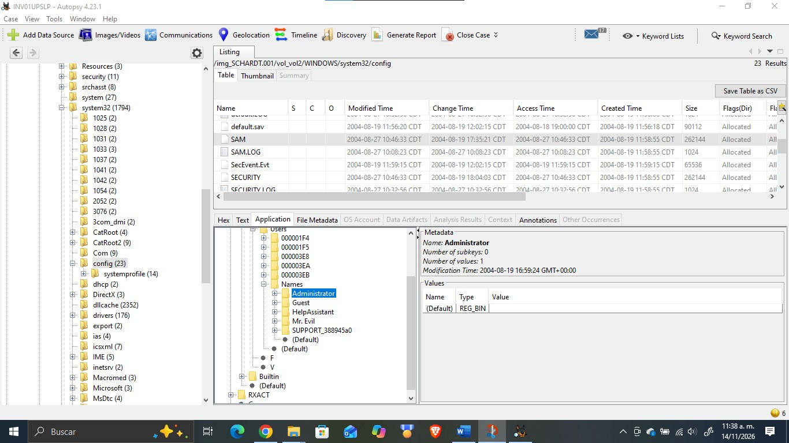
Resultado. Bajo Users hay cinco identificadores de cuenta (RID) y la llave Names lista cinco nombres, descritos en la tabla 6.
| Cuenta | Descripción |
|---|---|
| Administrator | Cuenta de administrador integrada de Windows (RID 500) |
| Guest | Cuenta de invitado integrada de Windows (RID 501) |
| HelpAssistant | Cuenta creada por Windows XP para la Asistencia remota |
| SUPPORT_388945a0 | Cuenta del servicio de Ayuda y soporte técnico de Windows XP |
| Mr. Evil | Cuenta de usuario creada en el equipo; coincide con el alias del sospechoso |
Contraste con la vista OS Accounts. Autopsy muestra 4 resultados en OS Accounts (figura 22): una cuenta de usuario con SID terminado en -1003 (login «mr», que probablemente es una versión truncada de «Mr. Evil») y tres SID de servicio del sistema (LOCAL SERVICE, NETWORK SERVICE y SYSTEM), que no son cuentas del SAM. Esa vista mezcla fuentes distintas y no contiene todas las cuentas locales, por lo que el total de cuentas registradas se toma del SAM: 5.
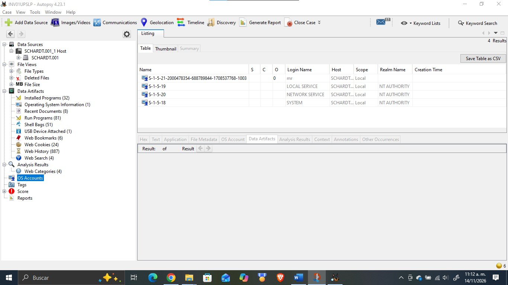
Resultados
Tabla de hallazgos
La tabla 7 consolida las respuestas de la actividad con la evidencia que las sustenta.
| Pregunta | Respuesta | Evidencia |
|---|---|---|
| Hash de la imagen | MD5 aee4fcd9301c03b3b054623ca261959a; coincide con la adquisición | Summary → Container; figuras 11–13 |
| Sistema operativo | Microsoft Windows XP, x86 (5.1, compilación 2600) | Operating System Information; figuras 14–15 |
| Fecha de instalación | 19/08/2004 22:48:27 UTC (17:48:27 CDT) | SOFTWARE\...\CurrentVersion; figura 15 |
| Zona horaria | Central Standard Time (UTC-6), con horario de verano (UTC-5) | SYSTEM\...\TimeZoneInformation; figura 16 |
| Propietario registrado | Greg Schardt | OS Information y CurrentVersion; figuras 14–15 |
| Nombre de la computadora | N-1A9ODN6ZXK4LQ | ComputerName y Tcpip; figuras 17–18 |
| Dominio principal | Ninguno (equipo independiente) | Tcpip y lanmanworkstation; figuras 18–19 |
| Último apagado | 27/08/2004 15:46:33 UTC (10:46:33 CDT) | SYSTEM\...\Windows; figura 20 |
| Cuentas registradas | 5 (Administrator, Guest, HelpAssistant, SUPPORT_388945a0, Mr. Evil) | SAM\...\Names; figura 21 |
Análisis y correlación con el sospechoso
Los hallazgos se refuerzan entre sí y vinculan la computadora con el sospechoso:
Identidad. El propietario registrado de Windows es Greg Schardt, el nombre del sospechoso, y existe una cuenta de usuario llamada «Mr. Evil», el apodo en línea que los asociados le atribuyen. Ambos datos se encuentran en archivos distintos del sistema (la llave CurrentVersion y el SAM), por lo que no son una sola evidencia repetida.
Perfil del equipo. El equipo es una computadora independiente (sin dominio), con su propia cuenta de usuario, configurada en la zona horaria central y con la hora de verano activa. Este perfil encaja con un equipo personal que se usaba en distintos lugares, como describe el escenario, pero no demuestra por sí mismo el uso de puntos de acceso ajenos.
Línea de tiempo. La instalación del sistema (19 de agosto de 2004) y el último apagado (27 de agosto de 2004) delimitan el periodo de uso conocido, de unos ocho días, y el último apagado ocurrió unos 24 días antes de que se encontrara el equipo abandonado (20 de septiembre de 2004), tal como muestra la tabla 8.
| Fecha y hora | Evento | Fuente |
|---|---|---|
19/08/2004 17:20:03 | Se asigna el nombre del equipo (ComputerName) | Registro |
19/08/2004 17:48:27 | Fecha de instalación de Windows XP (InstallDate) | Registro |
27/08/2004 10:46:33 | Último apagado ordenado del equipo | Registro |
20/09/2004 | La computadora se encuentra abandonada | Enunciado |
El analizador de Autopsy ya extrajo otros artefactos que todavía no se han revisado y que son la continuación natural del caso: 32 programas instalados, 81 programas ejecutados, 51 ShellBags, 8 documentos recientes, 1 dispositivo USB conectado y actividad web (887 entradas de historial, 24 cookies, 6 marcadores y 4 búsquedas).
Consideraciones legales y cadena de custodia
Un análisis forense debe poder repetirse y defenderse ante una autoridad. Para ello se siguieron estas prácticas, que se resumen a continuación.
Integridad. La imagen se trabajó siempre como copia (imagen RAW en archivo), nunca sobre el disco original. Autopsy abre la evidencia en modo de solo lectura y no la modifica. Con un disco físico se necesitaría un bloqueador de escritura.
Verificación. Se calcularon hashes MD5, SHA-1 y SHA-256 de la imagen y se comparó el MD5 con el de adquisición (tabla 4). Si el hash cambia, la evidencia deja de ser confiable.
Documentación. Cada paso quedó documentado con capturas de pantalla, y el caso conserva el nombre del examinador, la fecha y las notas. Se registra qué se hizo, cuándo y con qué herramienta, para que otro analista pueda reproducir los resultados.
Aspectos legales. La cadena de custodia debe registrar quién tuvo la evidencia, cuándo y para qué, desde la recolección hasta su presentación. Además, el análisis solo debe realizarse con la autorización legal correspondiente (por ejemplo, orden judicial o consentimiento del propietario) y conforme a la ley de la jurisdicción; en México, el acceso ilícito a sistemas y equipos de informática se tipifica en los artículos 211 bis 1 a 211 bis 7 del Código Penal Federal. Las conclusiones deben presentarse como indicios y no como una acusación: Greg Schardt es un presunto responsable y se presume inocente mientras no se demuestre lo contrario.
Además, el uso de filtros y de módulos de búsqueda ayuda a encontrar evidencia relevante entre miles de archivos, y correlacionar varias fuentes (Registro, sistema de archivos y artefactos de Autopsy) hace más sólido el caso.
Líneas de investigación a seguir
Con la evidencia obtenida y los artefactos pendientes se proponen las líneas de investigación de la tabla 9.
| N.º | Línea | Acción propuesta |
|---|---|---|
| 1 | Software de intercepción | Revisar Installed Programs (32) y Run Programs (81) para identificar herramientas de captura de tráfico, escaneo de redes inalámbricas o robo de contraseñas, y su fecha de instalación y de uso. |
| 2 | Actividad en Internet | Analizar el historial web (887 entradas), búsquedas, cookies y marcadores para ver qué sitios y redes visitó el usuario Mr. Evil. |
| 3 | Datos de tarjetas y credenciales | Buscar con Keyword Search números de tarjetas de crédito, nombres de usuario y contraseñas, y revisar los documentos recientes y los archivos eliminados del espacio no asignado. |
| 4 | Comunicaciones y correo | Revisar las cuentas y mensajes de correo (Email Parser) y las comunicaciones para identificar asociados o víctimas. |
| 5 | Dispositivos externos | Examinar el dispositivo USB conectado y las carpetas visitadas (ShellBags) para saber a dónde se copió información. |
| 6 | Hardware inalámbrico | Documentar la tarjeta PCMCIA y la antena 802.11b halladas junto con la computadora, y buscar en el sistema redes inalámbricas a las que se conectó. |
| 7 | Vínculo con la persona | Corroborar con testigos, cámaras y registros de los puntos de acceso que el usuario del equipo era Greg Schardt, ya que el registro y el nombre de cuenta no bastan por sí solos. |
Conclusión
La imagen forense SCHARDT se cargó en Autopsy y se verificó su integridad: el hash MD5 de la imagen es aee4fcd9301c03b3b054623ca261959a y coincide con el hash de adquisición. El análisis del Registro permitió responder todas las preguntas: la computadora tenía Windows XP de 32 bits, instalado el 19 de agosto de 2004 a las 22:48:27 UTC, configurado en la zona horaria central de Estados Unidos y Canadá, a nombre de Greg Schardt, con el nombre N-1A9ODN6ZXK4LQ, sin dominio, apagada por última vez el 27 de agosto de 2004 a las 15:46:33 UTC y con 5 cuentas, una de ellas llamada «Mr. Evil».
Estos datos vinculan la computadora con el sospechoso mediante evidencia independiente: el propietario registrado y el nombre de la cuenta de usuario. Sin embargo, que un equipo esté registrado a nombre de una persona no prueba quién lo usó; hacen falta los artefactos de uso (programas, navegación, correo, archivos) para demostrar las actividades de interceptación y fraude. Como limitaciones, las horas del Registro (UTC) y del sistema de archivos (CDT) deben convertirse a una misma zona; la vista OS Accounts de Autopsy no muestra todas las cuentas del SAM; y el hash de adquisición se tomó de la referencia publicada por NIST. Esta actividad mostró la importancia de seguir una metodología: preservar, verificar, analizar, correlacionar y documentar.
Referencias bibliográficas
- Brezinski, D., & Killalea, T. (2002). Guidelines for evidence collection and archiving (RFC 3227). Internet Engineering Task Force. https://www.rfc-editor.org/rfc/rfc3227
- Carvey, H. (2014). Windows forensic analysis toolkit: Advanced analysis techniques for Windows 8 (4.ª ed.). Syngress.
- Carrier, B. (s. f.). Autopsy and The Sleuth Kit documentation. Basis Technology. https://sleuthkit.org/autopsy/docs.php
- Cámara de Diputados del H. Congreso de la Unión. (s. f.). Código Penal Federal, título noveno, arts. 211 bis 1 a 211 bis 7. https://www.diputados.gob.mx/LeyesBiblio/pdf/CPF.pdf
- Kent, K., Chevalier, S., Grance, T., & Dang, H. (2006). Guide to integrating forensic techniques into incident response (NIST Special Publication 800-86). National Institute of Standards and Technology. https://csrc.nist.gov/pubs/sp/800/86/final
- Microsoft. (s. f.). FILETIME structure. Microsoft Learn. https://learn.microsoft.com/en-us/windows/win32/api/minwinbase/ns-minwinbase-filetime
- Microsoft. (s. f.). TIME_ZONE_INFORMATION structure. Microsoft Learn. https://learn.microsoft.com/en-us/windows/win32/api/timezoneapi/ns-timezoneapi-time_zone_information
- National Institute of Standards and Technology. (s. f.). Hacking Case. Computer Forensic Reference Data Sets (CFReDS). https://cfreds-archive.nist.gov/Hacking_Case.html
- Shekhar, S. (s. f.). CFReDS Project: Hacking Case challenge writeup. Medium. https://medium.com/@sshekhar01/cfreds-project-hacking-case-challenge-writeup-6a52883eac0b